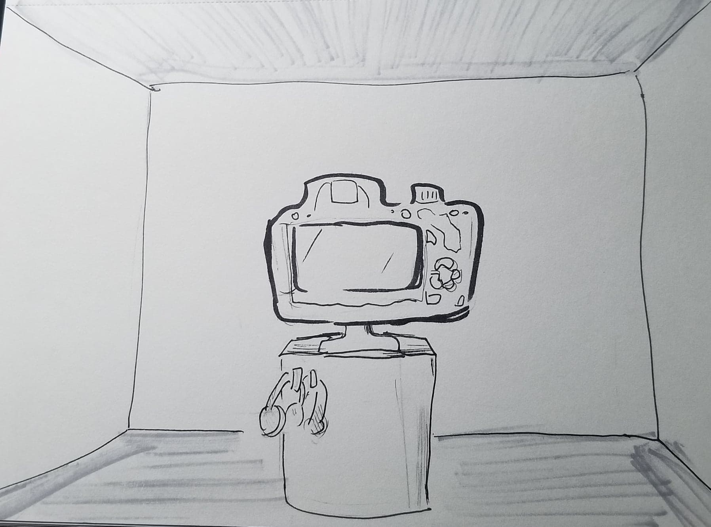
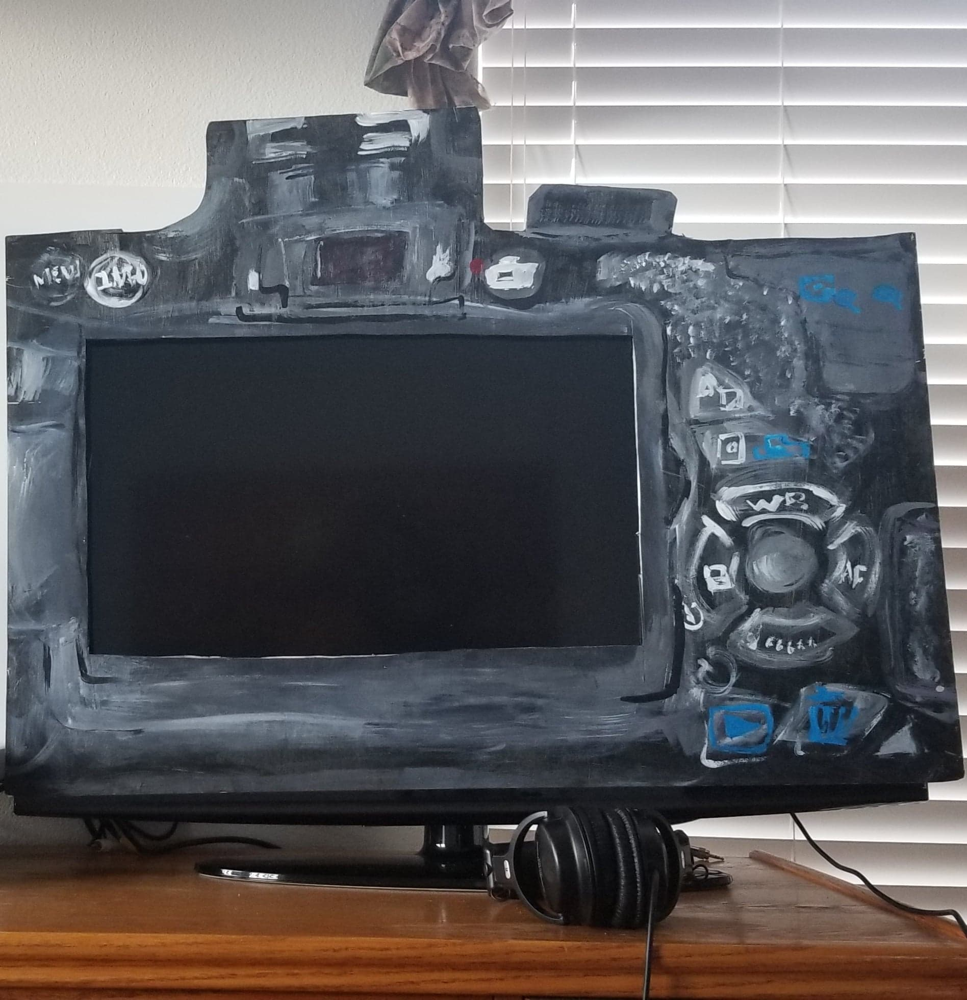

For my Project 2, I envision my "Follow" video to be played in a TV monitor integrated with a sculpture of a DLSR body where the monitor is behind. I intend to make the experience of intimacy and what is being shown. In order to do so, headphones for viewers would be provided to channel out bacjground noise as if one is focusing in recording another person. Since I have the same content for my project 2, except played in a loop and in a shorter amount of time, I have the similar intention of questioning the act of watching another person. Although it relates to the topic of surveillance, I want to also focus more on the act of recording and or watching the recording of someone with their knowledge and constent or without.
In also envisioning the location of the installation, I see a rather medium sized room with the TV monitor close to the back wall with dim lighting thatgive the intended experiecne for the viewer. Although I have not created my DSLR frame around the TV monitor to be more 3-dimensional for my in-class presentation idea, I intended it to have a bit more depth in the body to create a rather large "camera monitor." Another idea would be to simply have the video be shown in an actual body of a DSLR camera in a gallery.

Here is the simliar video from Project 1